Manual Book · Panduan Pengguna
Sistem Informasi Guru, Absensi, dan Prestasi - kelola data sekolah, kehadiran guru, jurnal, nilai, serta alur impor dan ekspor e-Rapor SMP 2025.2.
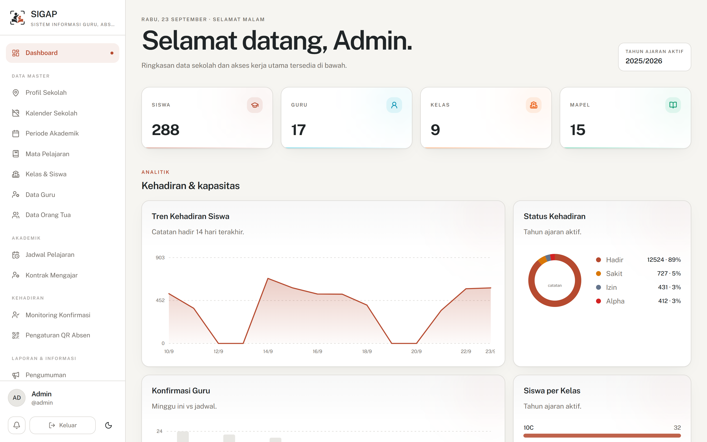
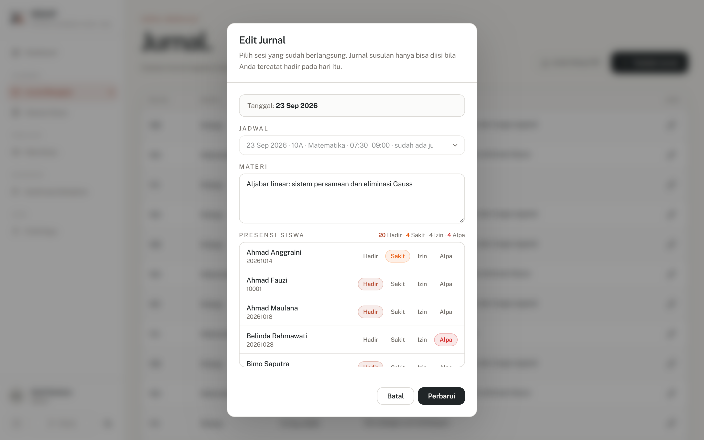
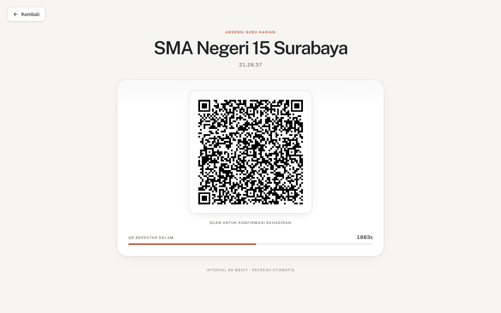
SIGAP menyatukan kebutuhan sekolah yang biasanya berjalan terpisah di buku, kertas, dan lembar sebar.
| Kebutuhan | Biasanya | Dengan SIGAP |
|---|---|---|
| Data guru, siswa, kelas, mapel | Buku induk dan berkas terpisah | Satu basis data, terhubung sejak awal |
| Absensi guru | Catatan manual, rawan titip absen | Scan QR di sekolah dengan posisi GPS dan jarak ke sekolah |
| Jurnal mengajar | Buku jurnal kertas | Terisi per jadwal, sekaligus menjadi presensi siswa |
| Nilai dan rapor | Rekap spreadsheet terpisah | Nilai per komponen, rapor tercetak, dan ekspor e-Rapor dari template sekolah |
| Informasi ke orang tua | Surat atau grup obrolan | Notifikasi dan pengumuman di akun orang tua |
Yang membuat SIGAP berbeda: data siswa langsung terhubung ke akun orang tuanya. Satu akun orang tua hanya bisa melihat nilai dan absensi anaknya sendiri - bukan kelas, bukan sekolah.
Mengisi data master, mengelola roster siswa dan akun orang tua, mengatur pengguna, hak akses, QR absen, template dan default e-Rapor, serta hak pemetaan guru.
Konfirmasi kehadiran lewat QR, mengisi jurnal dan presensi siswa, memasukkan nilai kelas yang diampunya, serta menyiapkan/mengekspor nilai e-Rapor sesuai aksesnya. Jika diizinkan, guru dapat mengubah pemetaan khusus kelas/mapel yang diampu.
Mengawasi kehadiran guru, melihat rekap nilai per kelas, memeriksa riwayat perubahan nilai (audit), membaca laporan konfirmasi di luar radius sekolah, mengunduh dokumen lingkup sekolah.
Melihat daftar anaknya, nilai dan rapor tiap anak, rekap absensi anak, serta pengumuman dan notifikasi dari sekolah.
Satu akun dapat memiliki satu atau beberapa peran. Gabungan hak akses dari peran-peran itu menentukan menu dan tindakan yang tersedia; karena itu suatu menu bisa tidak tampil bila akun belum memiliki hak terkait.
http://localhost:5555 pada lingkungan percobaan atau alamat server sekolah.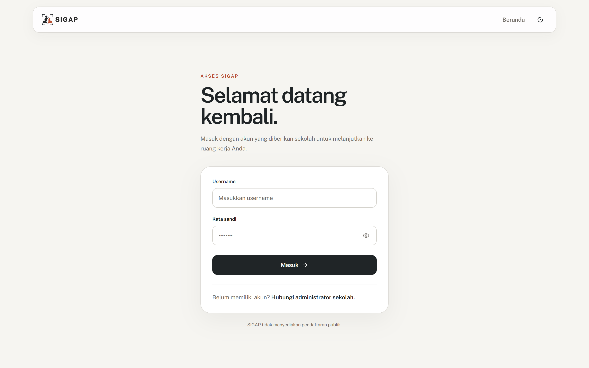
Lupa kata sandi? Hubungi administrator sekolah - hanya administrator yang dapat menyetel ulang kata sandi melalui menu Pengguna.
Setelah masuk, layar terbagi menjadi tiga area:
| Area | Isi |
|---|---|
| Sidebar kiri | Menu utama, dikelompokkan: Data Master, Akademik, Penilaian, Kehadiran, Laporan & Informasi, Manajemen, Akun. Menu aktif ditandai warna dan titik di kanannya. |
| Isi halaman | Tabel, kartu ringkasan, grafik, dan formulir sesuai menu yang dipilih. |
| Kanan bawah sidebar | Ikon notifikasi (lonceng), tombol Keluar, dan tombol mode gelap/terang. |
Kebiasaan antarmuka yang berlaku di seluruh aplikasi:
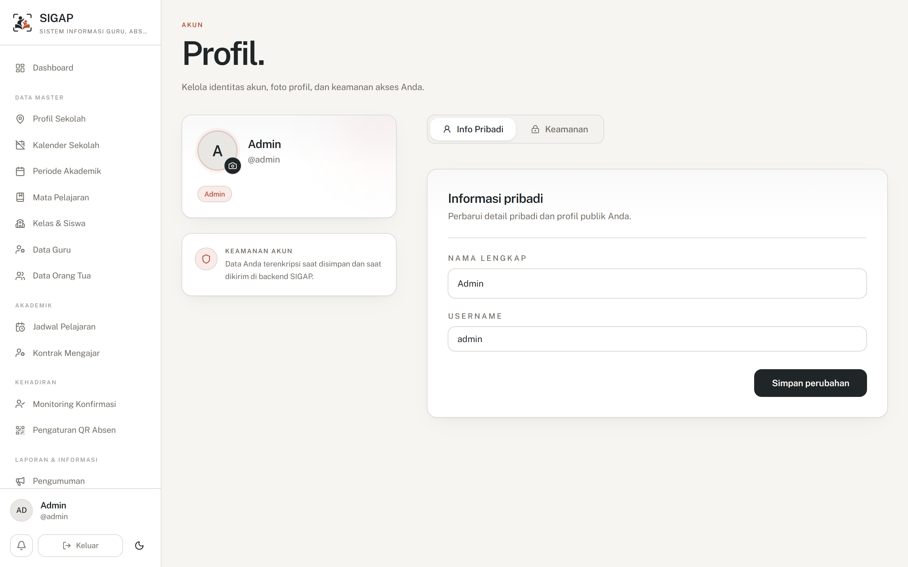
Menu Akun → Profil Saya berisi dua tab:
Ganti kata sandi pertama kali setelah akun Anda dibuat administrator.
Klik Keluar di bagian bawah sidebar. Jangan hanya menutup tab - keluar memastikan sesi Anda benar-benar berakhir, terutama di komputer sekolah yang dipakai bersama.
Administrator adalah orang pertama yang mengoperasikan SIGAP. Urutan di bawah ini adalah urutan yang disarankan, karena menu berikutnya bergantung pada data sebelumnya.
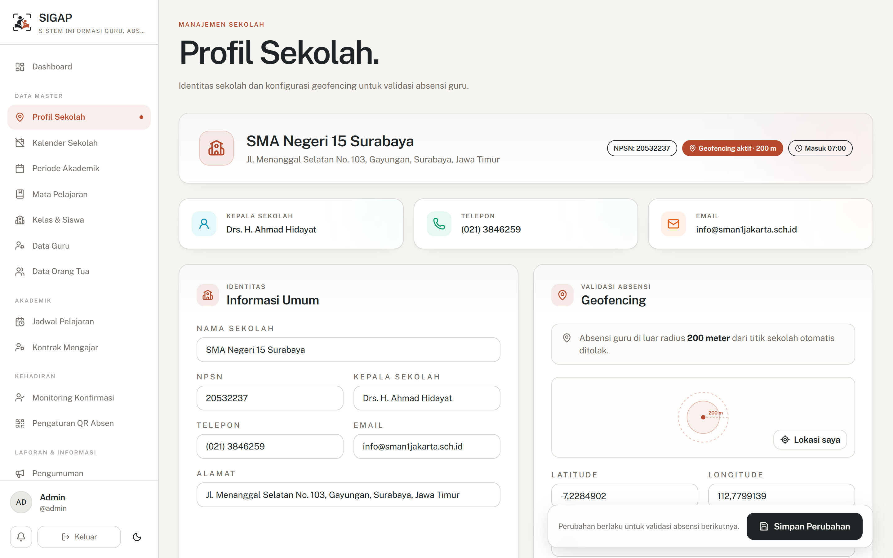
Menu Data Master → Profil Sekolah. Isi identitas sekolah: nama, NPSN, nama kepala sekolah, telepon, email, dan alamat.
Tiga kolom berikut menentukan cara kerja absensi guru:
| Kolom | Fungsi |
|---|---|
| Latitude dan Longitude | Titik pusat sekolah, diisi koordinat, contoh -7.2575 dan 112.7525. |
| Radius (meter) | Jarak maksimum guru masih dianggap “di dalam sekolah”, misalnya 150. |
| Jam mulai | Batas waktu kehadiran. Konfirmasi setelah jam ini tercatat Terlambat. |
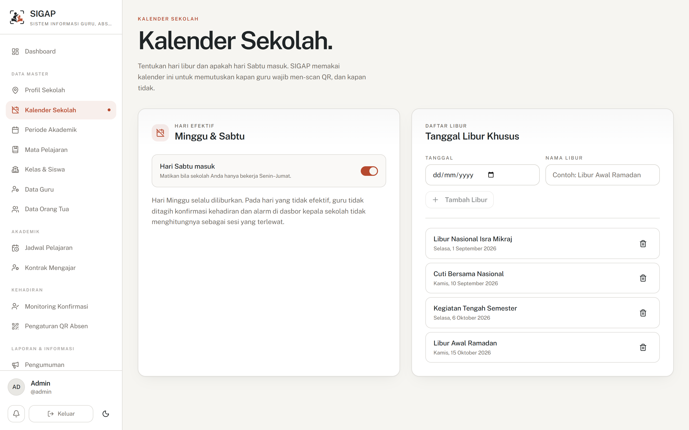
Menu Data Master → Kalender Sekolah. Halaman ini memberi tahu SIGAP kapan sekolah benar-benar efektif bekerja, sehingga tidak ada lagi guru yang ditagih absen pada hari libur.
Libur Awal Ramadan), lalu klik Tambah Libur. Hapus lewat ikon tempat sampah bila ternyata sekolah masuk.Yang dipengaruhi kalender ini:
| Bagian | Efek pada hari non-efektif |
|---|---|
| Halaman Nilai guru | tidak menuntut scan QR - nilai tetap terbuka |
| Form Jurnal mengajar | sesi hari itu tidak ditawarkan, termasuk untuk jurnal susulan |
| Alarm Guru Tanpa Konfirmasi | hari itu tidak dihitung, jadi tidak muncul baris palsu |
| Kehadiran Guru (30 Hari) dan Monitoring | hari itu dikeluarkan dari perhitungan hari mengajar |
Isi kalender di awal tahun ajaran bersama kepala sekolah. Sekolah yang berbeda punya keputusan berbeda soal hari Sabtu - sistem mengikuti pengaturan Anda, bukan sebaliknya.
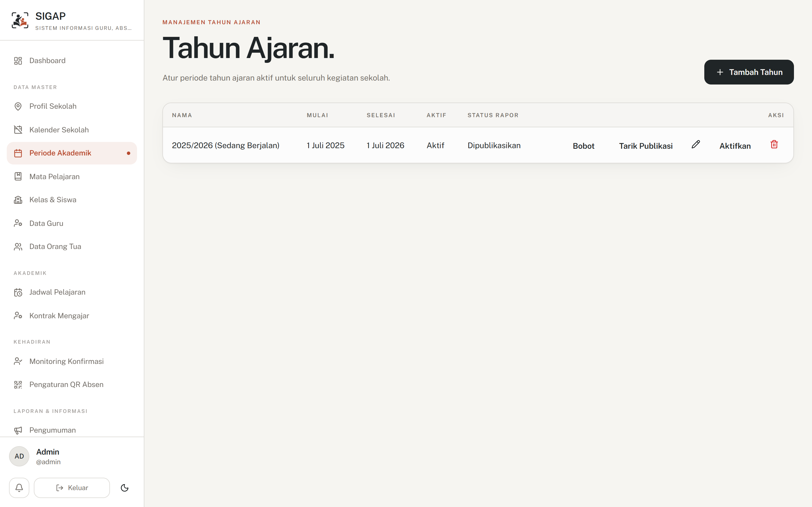
Menu Data Master → Periode Akademik.
2025/2026), tanggal mulai, dan tanggal selesai.Gunakan tombol publikasi ini sebagai “keran” di akhir semester, setelah semua nilai guru selesai diinput.
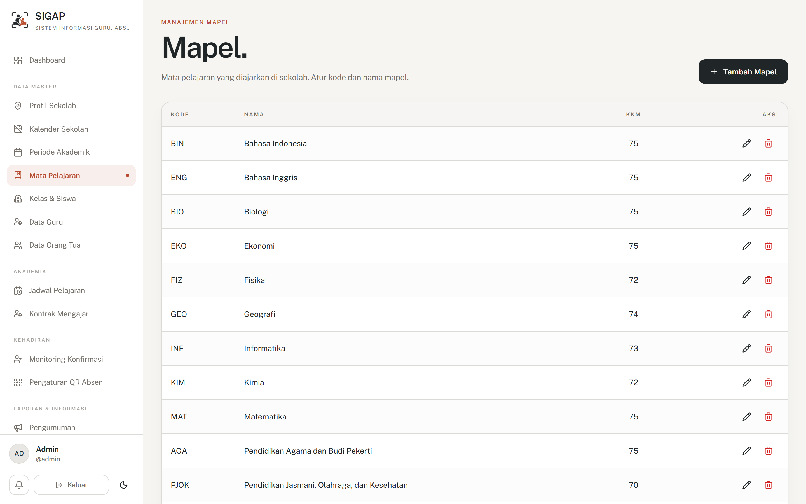
Menu Data Master → Mata Pelajaran. Tambahkan mapel beserta kode dan KKM (kriteria ketuntasan minimum). KKM dipakai sistem untuk menandai nilai tuntas/tidak tuntas dan menghitung predikat pada rapor.
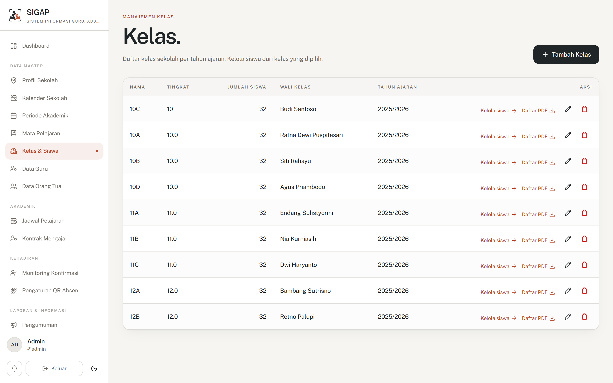
10A), tingkat, dan periode akademik.Isian siswa: NIS, nama, kelas, telepon, alamat.
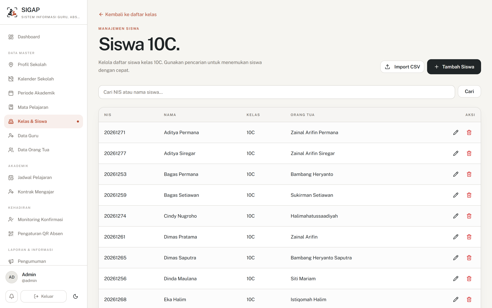
Di halaman Kelas, setiap baris menyediakan pintasan untuk membuka daftar siswa dan mengunduh Daftar PDF. Pada halaman siswa kelas, tombol Unduh data kelas (.xlsx) menghasilkan berkas Excel berisi roster saat ini untuk dilengkapi atau diperbarui; lihat 3.6.
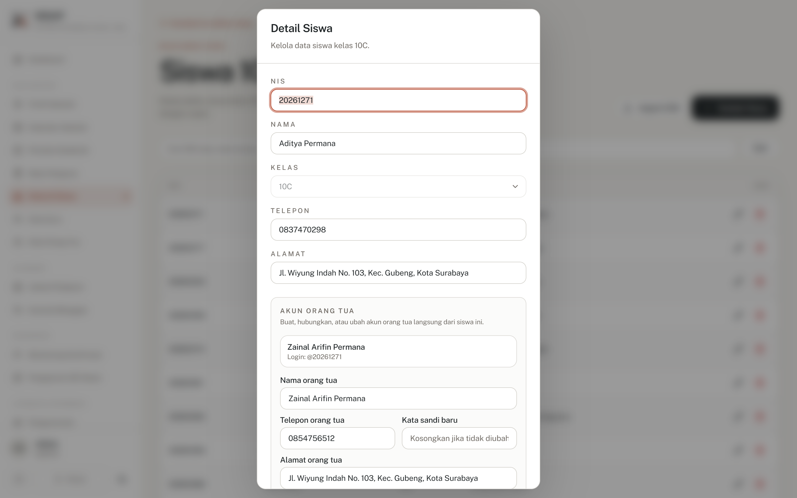
Di dalam formulir siswa ada blok Akun Orang Tua dengan tiga pilihan:
Di halaman Kelas & Siswa, tombol impor bernama Impor daftar siswa. SIGAP menerima Excel .xlsx dan CSV .csv. Gunakan template umum untuk memasukkan siswa baru, atau unduh roster kelas yang sudah berisi data saat ini untuk melengkapi data siswa dan orang tua.
data-kelas-[nama-kelas].xlsx memuat siswa dan data yang sudah tersimpan; jika kelas kosong, file hanya berisi baris judul kolom. Untuk template umum, buka impor dari halaman daftar siswa dan unduh Excel atau CSV..xlsx atau .csv melalui formulir Impor daftar siswa. Jika membuka impor dari halaman kelas, seluruh baris masuk ke kelas itu dan kolom Kelas pada berkas diabaikan.| Header | Template umum .xlsx / .csv | Data kelas .xlsx |
|---|---|---|
| ID Siswa SIGAP | - | A - jangan diubah; kosong untuk siswa baru |
| NIS | A | B |
| Nama Siswa | B | C |
| Kelas | C | D - diabaikan saat impor dari halaman kelas |
| Telepon Siswa | D | E |
| Alamat Siswa | E | F |
| Nama Orang Tua | F | G |
| Telepon Orang Tua | G | H |
| Alamat Orang Tua | H | I |
NIS dan Nama Siswa wajib untuk siswa baru. Pada baris siswa lama yang memiliki ID SIGAP, biarkan data identitas yang tidak ingin diubah tetap kosong. Kolom orang tua bersifat opsional.
Yang perlu diketahui:
"Jl. Mawar No. 5, RT 01/RW 02". Berkas berpemisah titik-koma (;) juga diterima..xlsx dan CSV .csv; CSV tetap didukung untuk berkas lama. Template Excel menampilkan kolom terpisah dan header yang jelas.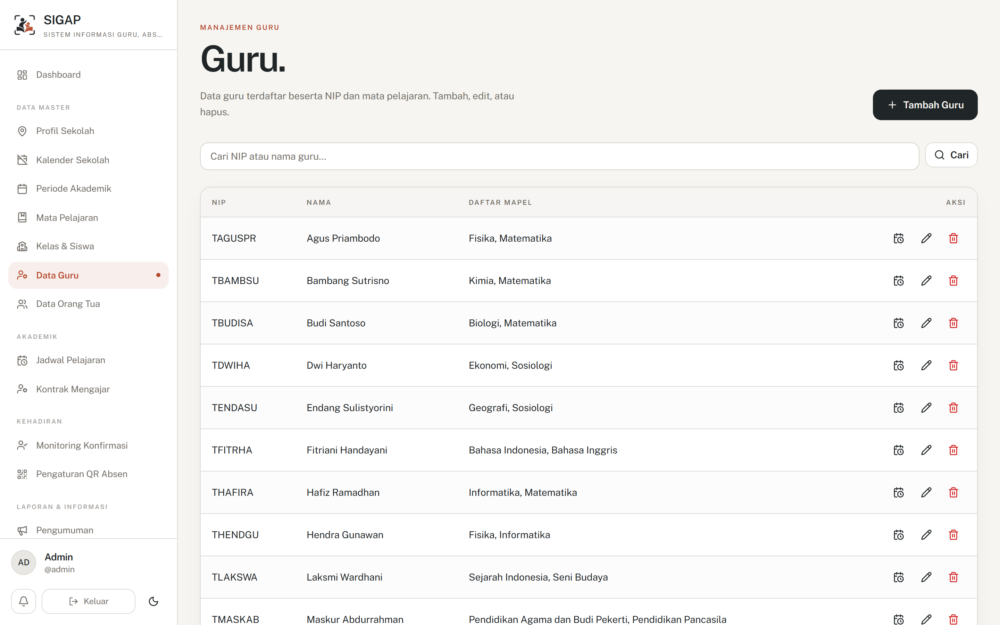
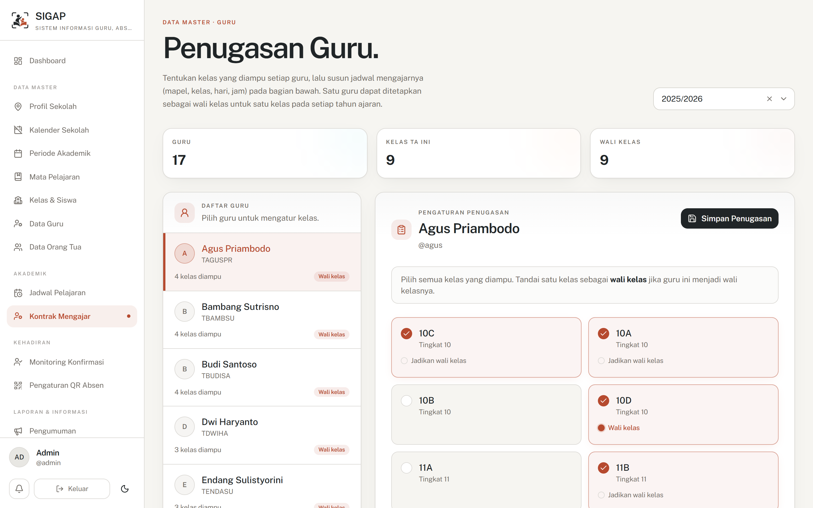
Kontrak mengajar inilah yang membuat seorang guru hanya melihat kelas tertentu di layarnya.
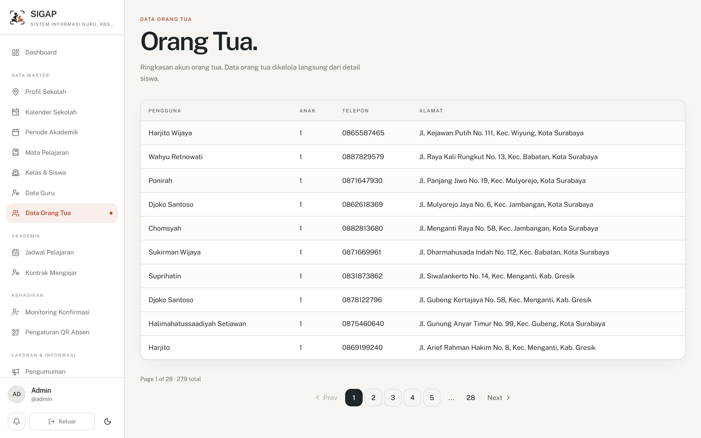
Menu Data Master → Data Orang Tua hanya membaca: daftar akun wali beserta jumlah anak yang terhubung. Pembuatan dan perubahan akun orang tua dilakukan dari formulir siswa (3.5) atau lewat impor daftar siswa (3.6), supaya relasi akun dan anak tidak terpisah.
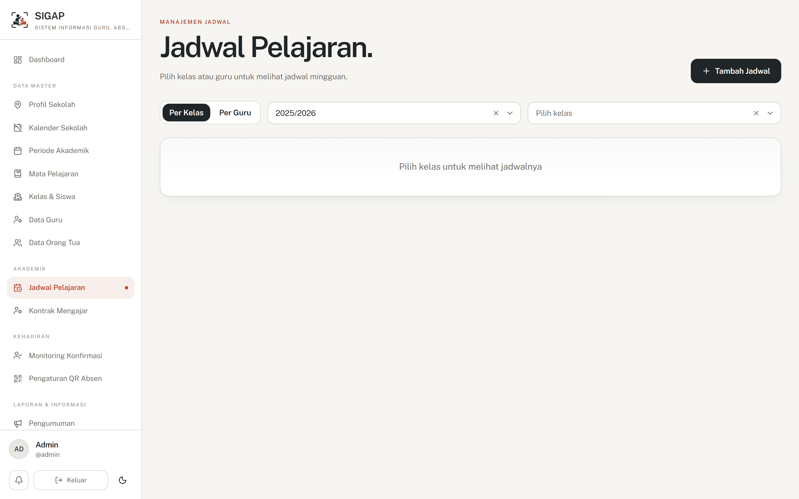
Menu Akademik → Jadwal Pelajaran. Pilih periode akademik, lalu saring per kelas atau guru untuk melihat jadwal yang berjalan.
Tombol Tambah membuka formulir: kelas, mata pelajaran, guru, hari, jam mulai, dan jam selesai. Jam pada jadwal menentukan daftar “hari ini” yang dilihat guru, sekaligus menjadi dasar perhitungan sesi terlewat bagi kepala sekolah.
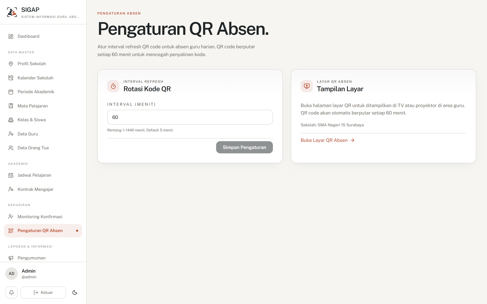
Menu Kehadiran → Pengaturan QR Absen mengatur interval pergantian QR - berapa detik satu kode QR berlaku sebelum berganti. Nilai kecil (misal 30-60 detik) membuat QR tidak bisa difoto lalu dipakai dari rumah.
Setelah disimpan, buka Layar QR Absen untuk menampilkan QR berukuran besar di TV atau proyektor di ruang guru.
Kode pada layar ini dibuat dari data sekolah dan diperbarui otomatis sesuai interval. Guru memindainya dari akun masing-masing.
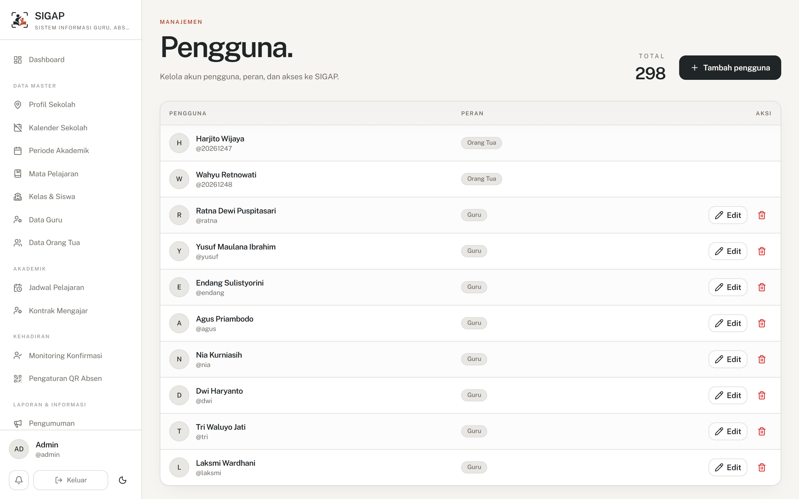
journals.create, grades.edit, students.view). Menambah hak ke sebuah peran langsung mengubah menu yang muncul di sidebar pengguna peran itu.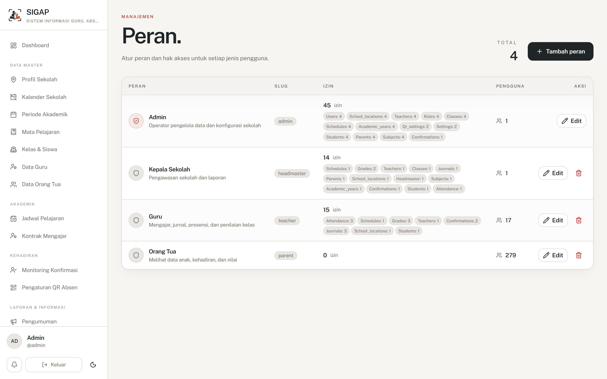
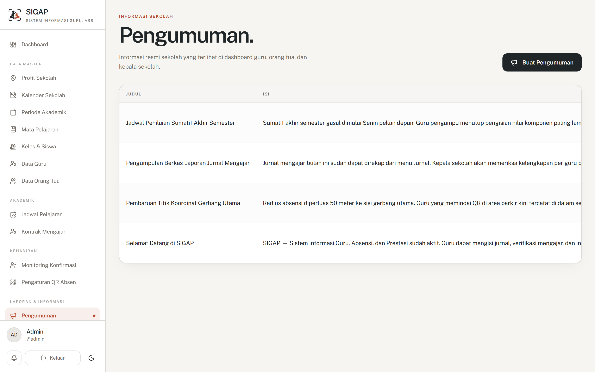
Menu Laporan & Informasi → Pengumuman. Judul dan isi pengumuman tersimpan dan muncul di dasbor pengguna yang menjadi sasarannya, termasuk orang tua.
Menu Penilaian → Pengaturan e-Rapor menyimpan struktur file e-Rapor sekolah dan menentukan kolom mana yang mengambil nilai dari komponen SIGAP. Admin mengelola template, default sekolah, dan sakelar akses pemetaan guru. Guru pengampu dapat mengubah pemetaan lokal bila sakelar tersebut aktif.
.xls dari e-Rapor SMP 2025.2, atau file .xlsx yang benar-benar disimpan ulang melalui Excel. Batas ukuran 2 MB. File harus mempertahankan struktur e-Rapor, termasuk identitas sekolah, kelas/rombel, daftar siswa, dan kolom penilaian yang didukung. Header harus memiliki mapel_id, id_anggota_rombel, dan status kunci; kolom penilaian harus berurutan setelah identitas siswa dan mencakup satu atau lebih Sumatif serta kolom Non Tes dan Tes. File nilai kosong boleh dipakai untuk mendaftarkan format.Setelah template dan roster cocok, tombol Unduh .xls (format sekolah) dan Unduh .xlsx tersedia. Keduanya mempertahankan struktur template sekolah yang diimpor dan mengisi nilai SIGAP sesuai pemetaan; pilih hasil unduhan yang diperlukan untuk proses unggah e-Rapor. Ekspor membutuhkan pemetaan seluruh siswa pada template yang masih cocok dengan roster SIGAP.
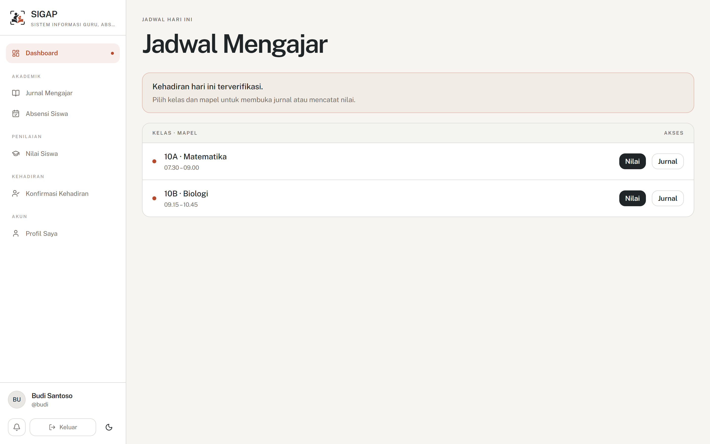
Guru masuk ke halaman Jadwal Mengajar. Isinya daftar sesi hari itu: kelas, mata pelajaran, jam mulai-selesai.
Menu Kehadiran → Konfirmasi Kehadiran.
| Kondisi | Yang tercatat |
|---|---|
| Di dalam radius sekolah, sebelum jam mulai | Hadir, tepat waktu |
| Di dalam radius, setelah jam mulai | Hadir, ditandai Terlambat |
| Di luar radius sekolah | Tetap tersimpan, tetapi ditandai di luar sekolah dan masuk laporan kepala sekolah |
Satu guru hanya punya satu catatan konfirmasi per hari. Setelah terverifikasi, seluruh menu guru terbuka - klik Lihat Jadwal Hari Ini untuk kembali.
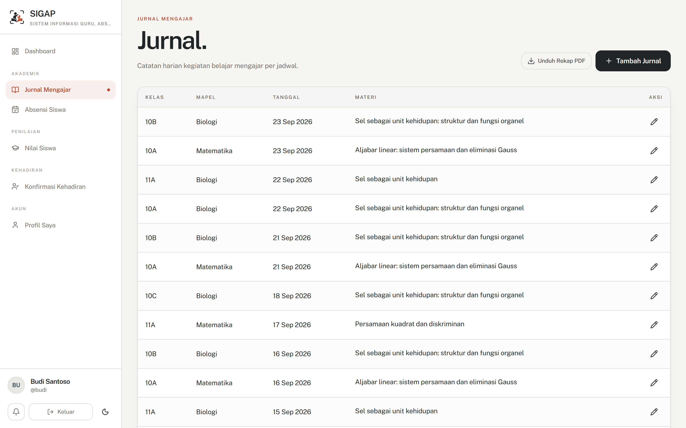
Menu Akademik → Jurnal Mengajar. Halaman ini berisi jurnal yang sudah Anda isi, tombol Tambah Jurnal di kanan atas, dan Unduh Rekap PDF untuk mencetak daftar jurnal (tanggal, guru, kelas, mapel, jam, materi) pada bulan berjalan.
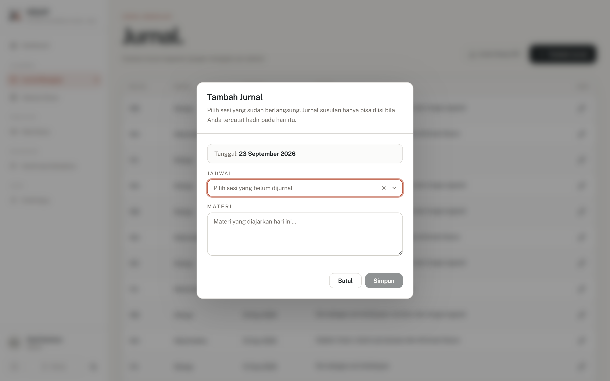
Isi jurnal untuk sesi yang sudah berlangsung. Sesi yang terlewat masih bisa ditutup sampai tiga hari ke belakang - ditandai keterangan susulan - dengan syarat Anda tercatat men-scan QR pada hari sesi itu berlangsung. Tanggal dan konfirmasi kehadiran terisi otomatis - Anda tidak perlu mengetiknya.
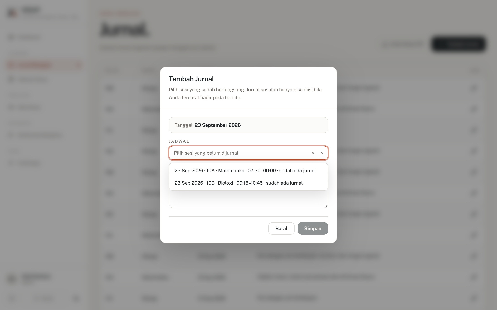
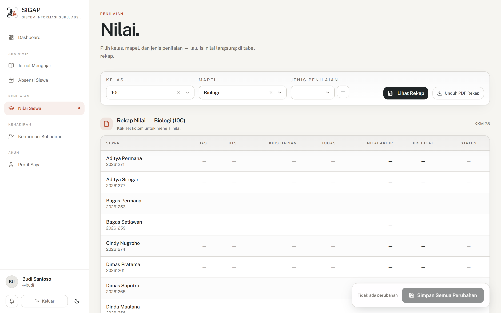
Menu Penilaian → Nilai Siswa.
Guru hanya dapat menilai kelas dan mapel sesuai kontrak mengajarnya. Soal konfirmasi: pada hari Anda terjadwal mengajar, nilai baru terbuka setelah memindai QR - sama seperti jurnal. Pada hari yang tidak ada jam mengajar untuk Anda, daftar nilai tetap bisa dibuka dan diisi seperti biasa.
Nilai di halaman ini adalah nilai SIGAP untuk pemantauan per komponen. Jika administrator menghubungkan komponen tersebut ke kolom e-Rapor (Bagian 3.12), guru mengisi sekali dan nilainya akan terbawa ke ekspor resmi. Komponen yang tidak dipetakan tetap menjadi nilai rutin SIGAP.
Setelah kelas dan mapel terpilih, tombol Unduh PDF Rekap di kanan atas mengunduh lembar rekap nilai kelas tersebut. Bagi guru yang bukan wali kelas, lembar itu hanya memuat mapel yang ia ampu sendiri.
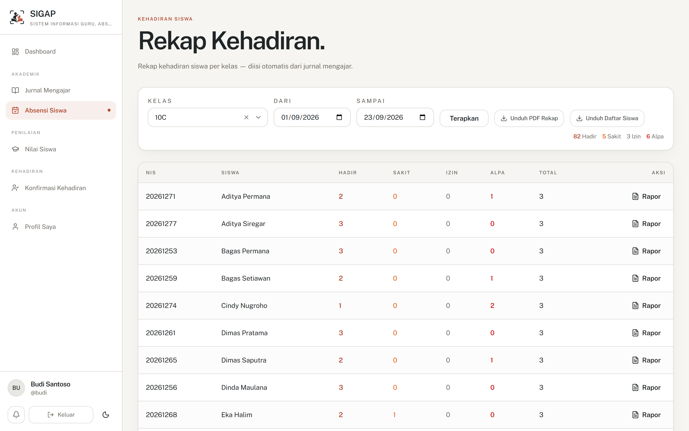
Menu Akademik → Absensi Siswa adalah baca ulang presensi yang sudah tercatat lewat jurnal: per kelas, per tanggal, per siswa. Pilih kelas dan rentang tanggal, maka seluruh siswa kelas itu tampil beserta jumlah Hadir, Sakit, Izin, Alpa, dan Total. Karena absensi lahir dari jurnal, halaman ini tidak punya formulir isian - cara menambah catatan absensi adalah dengan mengisi jurnal mengajar.
Dua tombol di sebelah Terapkan mengunduh hasil yang sedang tampil: Unduh PDF Rekap (rekapitulasi kehadiran dengan baris jumlah dan persentase hadir) dan Unduh Daftar Siswa (identitas siswa beserta kontak orang tua/wali).
Rapor dibuka dari halaman yang sama: Akademik → Absensi Siswa → pilih kelas → klik Rapor di kolom Aksi pada baris siswa. Kolom Aksi ini hanya muncul untuk kelas tempat Anda tercatat sebagai wali kelas. Guru pengampu biasa tidak melihat tombolnya, dan administrator tidak punya akses ke halaman rapor.
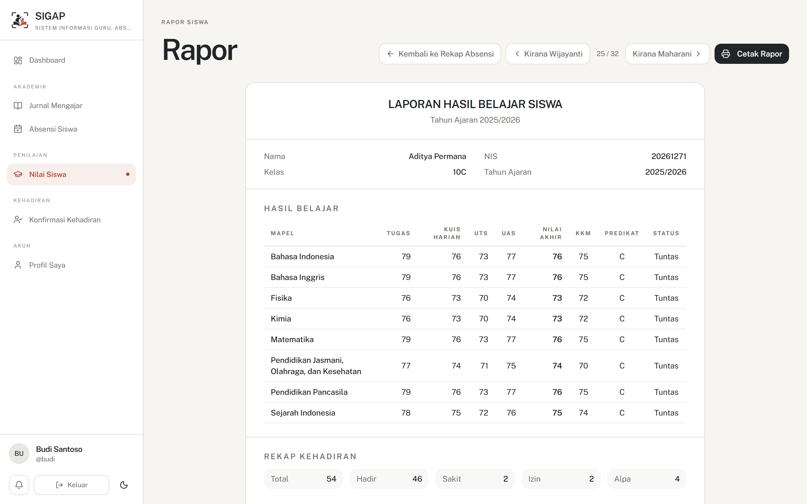
Lembar rapor berisi Laporan Hasil Belajar Siswa: identitas dan kelas, nilai per mata pelajaran (UAS, UTS,
Kuis Harian, Tugas), Nilai Akhir, KKM, Predikat, status Tuntas, serta rekap kehadiran. Bagian bawah disediakan
untuk tanda tangan orang tua/wali dan kepala sekolah. Klik Cetak Rapor di kanan atas (atau
Ctrl+P) untuk mencetak atau menyimpannya sebagai PDF.
Di sekitar tombol cetak itu ada baris navigasi yang hanya muncul di layar, tidak ikut tercetak: Kembali ke
halaman tempat rapor dibuka, serta ‹ siswa sebelumnya dan siswa berikutnya › untuk berpindah antar
siswa dalam kelas yang sama, dengan penanda posisi seperti 7 / 32. Orang tua berpindah di antara
anak-anak pada akunnya sendiri. Memeriksa satu rombel tidak perlu lagi bolak-balik ke daftar.
SIGAP menghasilkan berkas PDF sendiri - tanpa aplikasi lain, tanpa plugin peramban. Berkasnya diunduh apa adanya, jadi penampilannya sama di komputer mana pun dan bisa langsung dilampirkan atau dicetak.
| Dokumen | Diunduh dari | Isinya |
|---|---|---|
| Rekapitulasi Kehadiran Siswa | Akademik → Absensi Siswa → Unduh PDF Rekap | per siswa: Hadir, Sakit, Izin, Alpa, jumlah sesi, persentase hadir, lalu baris jumlah seluruh kelas |
| Daftar Siswa | Akademik → Absensi Siswa → Unduh Daftar Siswa, atau Kelas → Daftar PDF | nama, NIS, nama orang tua/wali, telepon, alamat |
| Lembar Rekapitulasi Nilai | Penilaian → Nilai Siswa → Unduh PDF Rekap, atau dasbor kepala sekolah → Detail nilai | rata-rata nilai per siswa per mata pelajaran, plus rata-rata akhir tiap siswa |
| Daftar Hadir Guru | Kehadiran → Monitoring Konfirmasi → Unduh PDF | tanggal, nama guru, jam pindai, jarak ke sekolah, dalam/luar radius, tepat waktu/terlambat |
| Rekapitulasi Jurnal Mengajar | Akademik → Jurnal Mengajar → Unduh Rekap PDF | tanggal, guru, kelas, mapel, jam, dan materi tiap sesi |
| Rapor siswa | rapor siswa → Cetak Rapor | nilai per mapel, predikat, rekap kehadiran, kolom tanda tangan (dialog cetak peramban, pilih Save as PDF) |
Dari halaman Penilaian → Nilai Siswa, pilih kelas dan mapel lalu klik Impor / Ekspor e-Rapor. Pilih semester yang sama dengan template. Guru perlu memiliki akses nilai untuk kelas dan mapel tersebut; pada hari terjadwal mengajar, konfirmasi QR mungkin diperlukan.
Jika template belum tersimpan, unggah file e-Rapor sekolah .xls atau .xlsx sesuai petunjuk administrator. Jika roster file belum sama dengan SIGAP, hubungi admin untuk meninjau dan menyesuaikan daftar siswa. Guru tidak dapat membuat siswa baru dari pratinjau impor.
Pada tabel e-Rapor, kolom yang telah dipetakan akan menampilkan nilai dari komponen SIGAP dan tidak perlu diisi lagi. Jika akses guru aktif, panel ringkas Pemetaan sumber nilai menampilkan statusnya. Klik Atur pemetaan untuk membuka Sumber setiap kolom e-Rapor dan mengubah pemetaan lokal kelas/mapel/semester yang sedang dibuka; perubahan tercatat di riwayat. Guru tidak dapat mengubah default sekolah atau sakelar akses. Kolom Isi langsung di halaman e-Rapor dapat diisi pada tabel tersebut. Klik Simpan nilai setelah perubahan langsung. Setelah template dan roster siap, pilih Unduh .xls (format sekolah) atau Unduh .xlsx. Berkas memuat kolom dan tata letak template yang terdaftar untuk kelas, mapel, dan semester yang dipilih.
Jika akses guru dinonaktifkan, minta administrator untuk memperbarui Sumber setiap kolom e-Rapor. Untuk mengubah default sekolah, selalu hubungi administrator. Pastikan nilai sudah diperiksa sebelum mengekspor.
Kepala sekolah masuk ke halaman Pengawasan Sekolah (kelompok menu Dasbor Kepala Sekolah).
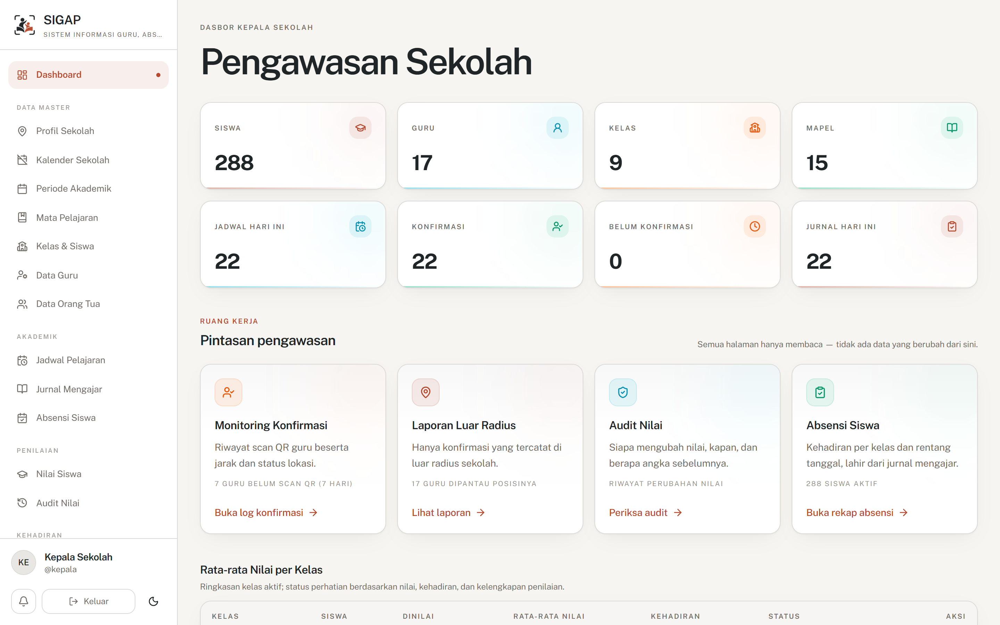
| Kartu | Artinya |
|---|---|
| Siswa | Jumlah siswa terdaftar. |
| Guru | Jumlah akun guru. |
| Kelas | Jumlah kelas pada periode aktif. |
| Mapel | Jumlah mata pelajaran. |
| Jadwal Hari Ini | Sesi yang seharusnya berjalan hari ini. |
| Konfirmasi | Sesi hari ini yang gurunya sudah memindai QR. |
| Belum Konfirmasi | Sesi hari ini yang gurunya belum memindai QR - angka yang paling perlu diperhatikan setiap pagi. |
| Jurnal Hari Ini | Jumlah jurnal yang sudah diisi hari ini. |
Empat kartu paling kanan bersifat hari ini. Pada hari libur, akhir pekan, atau hari Sabtu yang sudah dimatikan di Kalender Sekolah, keempatnya memang bernilai 0 - itu konsekuensi kalender yang benar, bukan gangguan. Empat kartu di kiri selalu terisi karena menghitung data sekolah, bukan kegiatan harian.
Tepat di bawah kartu ringkasan ada empat kartu pintasan. Semuanya hanya membuka halaman; tidak ada data yang berubah dari sana.
| Pintasan | Membuka |
|---|---|
| Monitoring Konfirmasi | Log pemindaian QR guru beserta jarak dan status lokasi. |
| Laporan Luar Radius | Konfirmasi yang tercatat di luar radius sekolah. |
| Audit Nilai | Riwayat perubahan nilai. |
| Absensi Siswa | Rekap kehadiran per kelas dan rentang tanggal. |
Baris kecil di tiap kartu menyebut angka yang sedang berlaku, misalnya 4 guru belum scan QR (7 hari), supaya kepala sekolah tahu ke mana harus melihat lebih dulu.
Tabel ini merangkum tiap kelas aktif: Kelas, Siswa, Dinilai, Rata-rata Nilai, Kehadiran, Status, Aksi.
32/32 - berapa siswa yang sudah punya nilai dibandingkan jumlah siswanya. Kelas dengan 0/32 berarti belum ada nilai masuk sama sekali.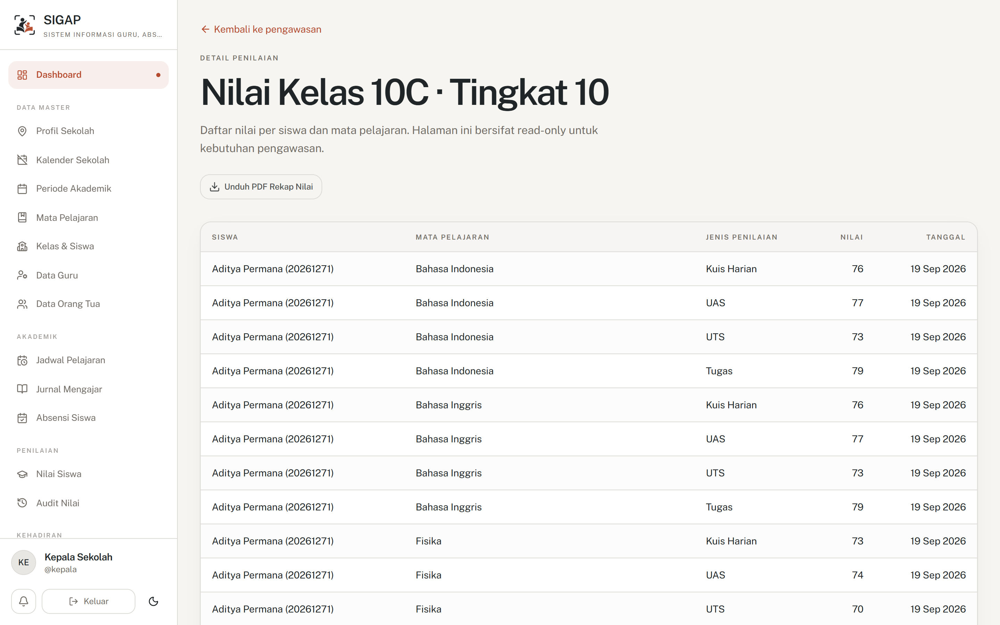
Tabel kedua membandingkan konfirmasi QR dengan hari mengajar yang dijadwalkan: Guru, Hari Hadir, Tingkat Kehadiran, Status, Aksi. Barisnya berbunyi misalnya Siti Rahayu · 20/21 · 95,24% · Normal, dan guru di bawah 90% ditandai Perlu perhatian. Tautan Riwayat membuka daftar hari guru tersebut.
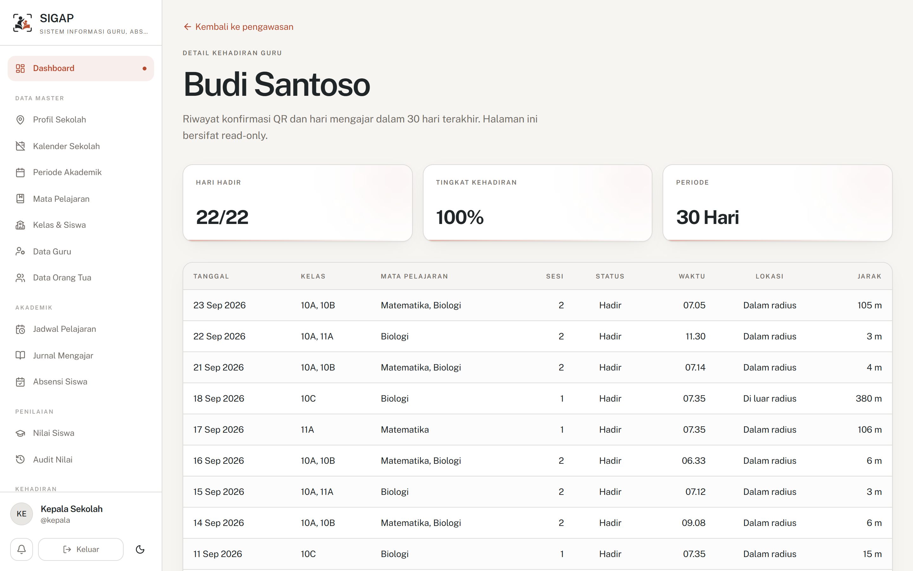
Lembar riwayat menampilkan Tanggal, Kelas, Mata Pelajaran, Sesi, Status, Waktu, Lokasi, Jarak.
Satu baris berarti satu guru pada satu hari: ia punya jadwal mengajar, tetapi tidak ada pemindaian QR pada hari itu. Kolomnya Guru, Tanggal, Sesi Terlewat, Kelas, Mapel, Status.
Aturannya mengikuti cara guru bekerja: satu pemindaian berlaku untuk satu hari penuh, bukan per jam pelajaran. Karena itu baris di tabel ini muncul meskipun guru tersebut hanya melewatkan scan pagi - jumlah sesinya ikut ditampilkan agar terlihat seberapa besar dampaknya pada hari itu.
Menu Kehadiran → Monitoring Konfirmasi membuka Log Kehadiran Guru. Bagian atas menampilkan ringkasan hari ini, misalnya 15 dari 16 guru sudah konfirmasi hari ini · Batas tepat waktu 07:00. Di bawahnya ada penyaring Dari Tanggal, Sampai Tanggal, dan Guru (tombol Reset muncul saat penyaring aktif). Gunakan rentang tanggal untuk melihat histori, misalnya satu bulan terakhir.
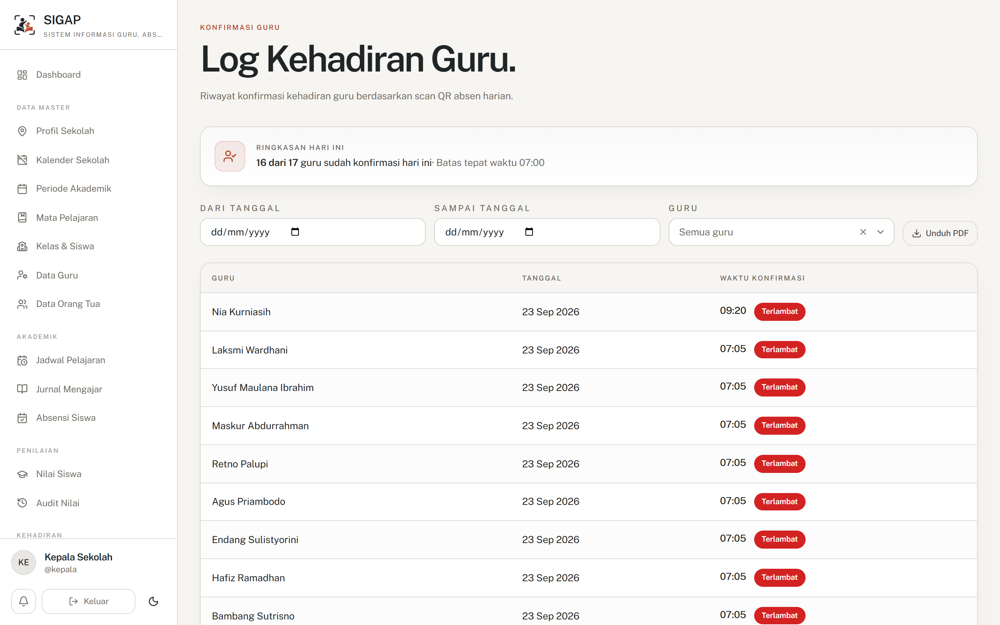
Tombol Unduh PDF di sebelah penyaring menghasilkan Daftar Hadir Guru untuk persis rentang yang sedang tampil - berkas yang biasa dipakai untuk rekap bulanan atau keperluan tanda tangan. Baris pertamanya menyebut jumlah pindai dan batas jam tepat waktu yang berlaku, dan tiap baris memuat jarak serta status dalam/luar radius.
Menu Laporan → Laporan Kehadiran Guru khusus menampilkan konfirmasi yang tercatat di luar radius sekolah - kolomnya Guru, Kelas, Mapel, Jarak, Konfirmasi, Status. Laporan inilah yang dipakai menindaklanjuti dugaan absensi tidak di lokasi.
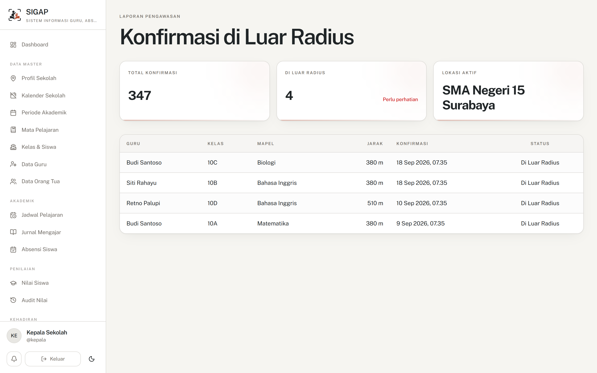
Menu Penilaian → Audit Nilai berisi riwayat perubahan nilai: Waktu, Siswa, Mapel, Kelas, Jenis, Aksi, Nilai, Oleh. Setiap perubahan tercatat otomatis - nilai lama dan nilai baru sama-sama ditampilkan - dan tidak dapat dihapus dari layar. Ini pegangan saat ada keberatan orang tua terhadap sebuah nilai.
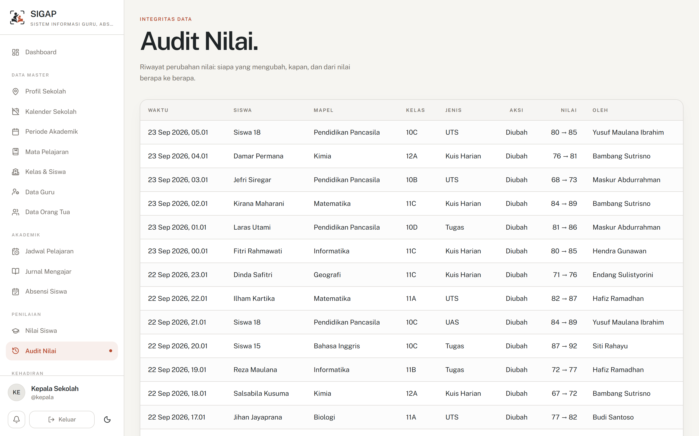
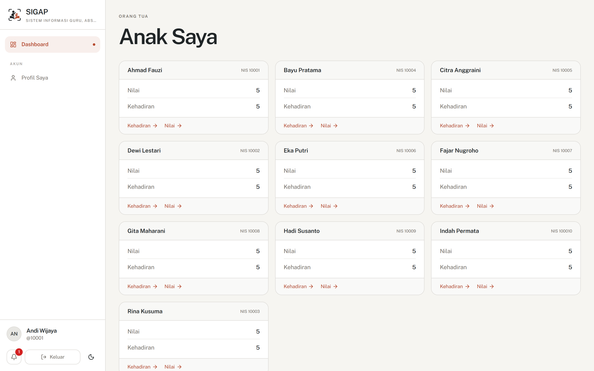
Orang tua masuk memakai username = NIS anak dan kata sandi yang diberikan sekolah (bisa dibuatkan lewat impor daftar siswa atau oleh administrator di halaman siswa). Dasbor menampilkan seluruh anak yang tertaut ke akun tersebut, lengkap dengan kelas dan ringkasan kehadirannya.
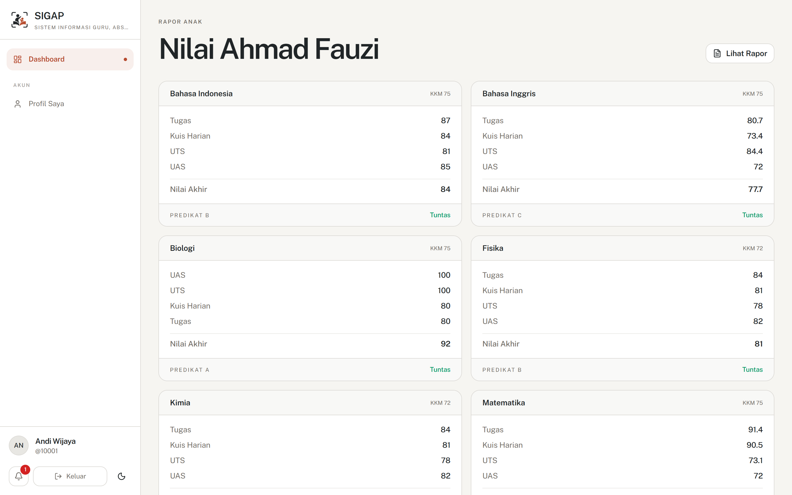
Pilih anak, lalu buka Nilai. Yang terlihat: nilai tiap komponen per mata pelajaran, nilai akhir, predikat, dan keterangan tuntas terhadap KKM.
Setelah nilai dipublikasikan, bagian Nilai Resmi e-Rapor juga dapat tampil terpisah bila template e-Rapor tersedia dan memiliki nilai. Bagian ini mengikuti kolom resmi e-Rapor yang disiapkan untuk kelas, mapel, dan semester tersebut; nilai tugas harian atau komponen lain tetap ada pada rekap nilai SIGAP.
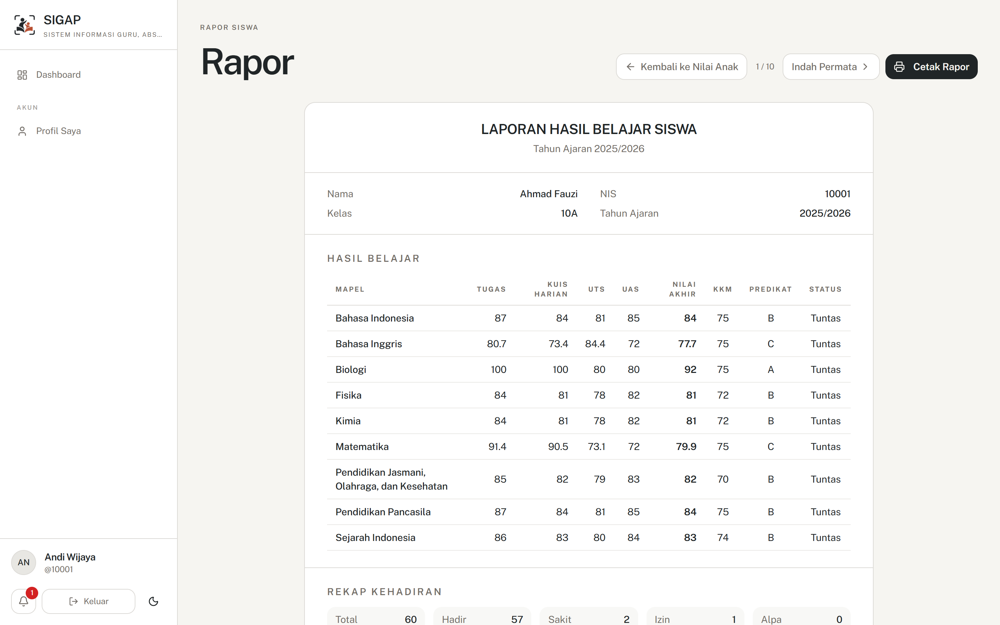
Klik Lihat Rapor di kanan atas halaman nilai untuk membuka lembar rekap satu anak - nilai akhir, predikat, dan rekap kehadiran dalam format siap cetak. Di halaman itu Anda dapat berpindah ke anak lain pada akun Anda lewat tombol ‹ sebelumnya dan berikutnya ›, atau kembali ke nilai anak lewat tautan Kembali.
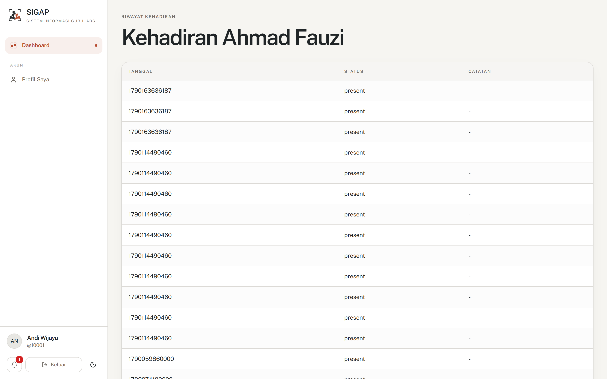
Rekap kehadiran per tanggal beserta total Hadir, Sakit, Izin, dan Alpa. Data ini berasal dari jurnal yang diisi guru pengampu pada hari tersebut.
Ikon lonceng di pojok sidebar menampilkan pemberitahuan pribadi (misalnya ada nilai baru). Pengumuman sekolah muncul di halaman utamanya. Orang tua juga dapat mengganti kata sandi sendiri di Profil Saya.
| Waktu | Aksi di SIGAP |
|---|---|
| Tiba di sekolah | Kehadiran → Konfirmasi Kehadiran → pindai QR di ruang guru → verifikasi |
| Sebelum mengajar | Akademik → Jurnal Mengajar → Tambah Jurnal → pilih sesi, tulis materi, tandai siswa yang tidak hadir, simpan |
| Setelah ujian | Penilaian → Nilai Siswa → pilih kelas & mapel → input nilai → simpan |
| Sepanjang hari | Ulangi jurnal untuk setiap sesi yang diampu |
| Gejala | Penyebab umum | Yang dilakukan |
|---|---|---|
| Menu yang dicari tidak muncul | Hak akses peran Anda memang tidak mencakup menu itu | Lihat Lampiran A, atau minta administrator menyesuaikan peran |
| Tombol jurnal/nilai bertuliskan Akses terkunci | Belum konfirmasi kehadiran hari ini | Pindai QR lebih dulu (Bagian 4.2) |
| Kamera tidak muncul saat pindai | Izin kamera belum diberikan, atau halaman dibuka tanpa HTTPS di luar localhost | Buka lewat alamat https://…, atau izinkan kamera di pengaturan peramban |
| Muncul “Di luar radius sekolah” | Posisi GPS belum akurat, atau guru benar-benar di luar sekolah | Tunggu posisi terbaca, klik Perbarui lokasi, pastikan GPS perangkat aktif |
| Daftar jadwal pada jurnal kosong | Tidak ada jadwal mengajar hari itu, atau kontrak/jadwal belum dibuat | Periksa jadwal pelajaran dan kontrak mengajar bersama administrator |
| Angka rekap absensi jauh lebih kecil daripada jumlah sesi kelas | Sebagai guru pengampu, yang dihitung hanya sesi Anda sendiri | Untuk rekap satu kelas penuh, unduh dari akun kepala sekolah (Bagian 4.5) |
| Tombol Unduh PDF tidak muncul di layar | Dokumen itu memang di luar lingkup peran Anda | Minta peran yang berhak: kepala sekolah untuk lingkup penuh, guru untuk mapelnya sendiri |
| Guru tetap diminta scan QR pada hari libur | Tanggal libur belum dicatat di kalender sekolah | Administrator mengisi Data Master → Kalender Sekolah (Bagian 3.2) |
| Alarm kepala sekolah menandai hari Sabtu | Sakelar Hari Sabtu masuk masih aktif padahal sekolah libur | Matikan sakelarnya di Kalender Sekolah |
| Impor siswa menolak baris | NIS sudah dipakai, kelas tidak dikenali, atau akun orang tua baru belum diberi kata sandi awal | Baca rincian baris pada hasil impor; perbaiki data lalu impor kembali |
| File e-Rapor tidak dikenal atau kolom nilai tidak ditemukan | File bukan workbook e-Rapor asli, struktur/header diubah, atau file hanya diganti ekstensi | Unduh ulang file dari e-Rapor SMP 2025.2. Jika perlu .xlsx, gunakan File → Save As → Excel Workbook (.xlsx) dan pertahankan header serta susunan kolom aslinya |
| Siswa lama ikut dianggap siswa baru saat impor kelas | Kolom ID Siswa SIGAP kosong, berubah, atau dihapus | Unduh ulang data kelas dan jangan ubah kolom ID siswa. Untuk siswa baru, biarkan ID kosong dan isi NIS serta nama |
| Saya mengosongkan kontak orang tua, tetapi data lama tetap ada | Kolom kosong pada baris siswa lama tidak menghapus data tersimpan | Isi nilai baru yang ingin disimpan; ubah atau lepas akun lewat formulir siswa bila perlu menghapus relasi akun |
| Semua kolom CSV menumpuk di satu sel | Pengaturan regional Excel memakai pemisah yang berbeda | Tidak masalah untuk sistem. Untuk melihat per kolom: Data → From Text/CSV, pilih pemisah yang sesuai (koma atau titik-koma) |
| Unggah e-Rapor menyatakan kelas/rombel atau NPSN berbeda | Pilihan di SIGAP tidak sama dengan identitas pada workbook | Cocokkan kelas, mapel, semester, dan NPSN Profil Sekolah. Gunakan file asli dari e-Rapor atau simpan sebagai .xlsx dari Excel tanpa mengubah identitas dan struktur |
| Unggah e-Rapor meminta NIS siswa baru | Ada siswa pada workbook yang belum cocok dengan roster SIGAP | Admin masukkan NIS asli pada pratinjau lalu buat siswa. NIS wajib dan harus unik; akun orang tua dibuat terpisah |
| Roster SIGAP memuat siswa yang tidak ada pada file e-Rapor | Isi kelas di SIGAP dan file tidak sama | Periksa/selaraskan daftar siswa kelas sebelum mengunggah template |
| Ekspor e-Rapor belum tersedia | Template belum diunggah, pemetaan siswa belum lengkap, atau roster berubah | Admin unggah kembali template untuk kelas/mapel/semester yang dipilih dan pastikan semua siswa cocok |
| Nilai e-Rapor kosong meski nilai tugas sudah diisi | Kolom template belum dipetakan ke komponen nilai yang diisi | Klik Atur pemetaan pada panel Pemetaan sumber nilai dan periksa sumber kolom. Jika tidak memiliki akses, minta admin mengatur pemetaan. Kolom Isi langsung diisi pada tabel e-Rapor. |
| Orang tua tidak melihat nilai | Publikasi nilai periode aktif masih mati | Aktifkan di Periode Akademik |
| Nilai anak tidak lengkap | Guru belum menyimpan nilai komponen | Cek Progres nilai di dasbor kepala sekolah |
| Data sudah diubah tapi layar masih lama | Sesi peramban menggantung | Muat ulang halaman (Ctrl+R) |
| Lupa kata sandi | - | Administrator menyetel ulang di Pengguna; pengguna dapat menggantinya sendiri di Profil Saya bila masih ingat sandi lama |
| QR di layar tidak berganti | Interval terlalu besar atau halaman layar QR tidak aktif | Perkecil interval di Pengaturan QR Absen, buka ulang layar QR |
| Kelompok menu | Admin | Guru | Kepala Sekolah | Orang Tua |
|---|---|---|---|---|
| Dashboard | • | Jadwal Mengajar | Pengawasan Sekolah | Dashboard Anak |
| Profil Sekolah | ya | - | ya | - |
| Kalender Sekolah | ya | - | ya | - |
| Periode Akademik | ya | - | ya | - |
| Mata Pelajaran | ya | - | ya | - |
| Kelas & Siswa | ya | - | ya | - |
| Data Guru | ya | - | ya | - |
| Data Orang Tua | ya | - | ya | - |
| Jadwal Pelajaran | ya | - | ya | - |
| Kontrak Mengajar | ya | - | - | - |
| Jurnal Mengajar | - | ya | ya | - |
| Absensi Siswa | - | ya | ya | - |
| Nilai Siswa | - | ya | ya | - |
| Pengaturan e-Rapor | ya | Impor / Ekspor e-Rapor di Nilai Siswa | - | - |
| Audit Nilai | - | - | ya | - |
| Konfirmasi Kehadiran | - | ya | - | - |
| Monitoring Konfirmasi | ya | - | ya | - |
| Pengaturan QR Absen | ya | - | - | - |
| Pengawasan Sekolah | - | - | ya | - |
| Laporan Kehadiran Guru | - | - | ya | - |
| Pengumuman | ya | - | - | - |
| Pengguna | ya | - | - | - |
| Peran & Hak Akses | ya | - | - | - |
| Profil Saya | ya | ya | ya | ya |
Daftar di atas mengikuti hak akses, sehingga dapat berubah jika administrator menyesuaikan peran. Orang tua tidak punya menu Pengumuman: pengumuman sekolah dan notifikasi nilai anaknya tampil langsung di halaman Dashboard Anak. Administrator memang tidak diberi akses ke Jurnal Mengajar, Nilai Siswa, dan Rapor - itu pilihan desain, bukan kekurangan hak akses.
Akun berikut tersedia setelah npm run seed dijalankan pada lingkungan percobaan. Jangan
memakainya di lingkungan sekolah yang sebenarnya - ganti seluruh kata sandinya.
| Peran | Username | Kata sandi | Catatan |
|---|---|---|---|
| Administrator | admin | admin123 | Akses penuh data master |
| Kepala Sekolah | kepala | kepala123 | Dasbor pengawasan, laporan, dan unduhan lingkup penuh |
| Guru Matematika & Biologi | budi | teacher123 | Wali kelas 10C, mengampu beberapa rombel |
| Guru Bahasa Inggris | siti | teacher123 | Wali kelas 10B |
| Guru lain (15 akun) | ratna (wali 10A), agus (10D), endang (11A), nia (11B), dwi (11C), bambang (12A), retno (12B), yusuf, tri, laksmi, hafiz, nur, fitri, hendra, maskur | teacher123 | Satu akun per guru; sembilan di antaranya wali kelas |
| Orang Tua - satu anak | 20261001 | parent123 | Username = NIS anak; tiap siswa punya akun orang tuanya sendiri |
| Orang Tua - banyak anak | 10001 | parent123 | Keluarga contoh: satu akun menaungi 10 anak (NIS 10001-10010) |
Data hasil seed berisi 288 siswa pada 9 rombel (32 siswa per kelas), 17 guru, dan 15 mata pelajaran, lengkap dengan 30 hari jadwal, jurnal, absensi, dan nilai - jadi semua tabel dan grafik terisi saat dibuka. Kehadiran guru tercatat satu pindai per orang per hari, dan Kalender Sekolah sudah diisi empat tanggal libur contoh (dua sudah lewat, dua masih akan datang) supaya perbedaan hari efektif terlihat di layar.